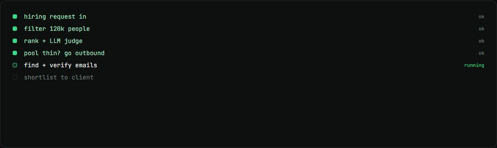

Candidate search and outbound sourcing
Search the client's own pool, go outbound when it runs dry, and check every change against real hires.
my role Forward Deployed Engineer on a small team: built the search evals, run outbound sourcing and keep client hire records right.
The problem
Clients send a hiring request and expect a short list of strong people. About 97% of placements came from the client's own pool of 120,000+ people, so roles too niche for the pool stalled. And nobody could say how often the search found the person who was actually hired.
How it works
- Hard filters (country, pay, English level, recency) cut the pool of 120,000+ people down to who fits the job.
- Keyword and vector search rank the best few hundred, and a cheap LLM prescreen drops clear misses.
- An LLM judge scores each person against the job's checklist, and an auditor checks the evidence behind every verdict.
- When the pool runs dry, go outbound: AI Ark people search, Serper (Google search of LinkedIn) and Apify find new people, and the same judge scores them.
- SalesQL and FullEnrich find personal emails, Reoon and ZeroBounce verify them, and Instantly sends only after a person approves the list.
- People who reply apply through the normal candidate flow. When a client hires, the hire and start date are recorded.
- Replay past jobs to check the real hire still shows up, and ship only the changes that win.
What changed
- 21interested candidates from outbound, on a job where 158 pool invites found no one ready
- 14% to 33%recall at 50 from one index fix
- 75%of real hires a hard country filter removed
- $0.16to judge and audit 96 candidates
- 41.7%recall at 100 for semantic search, vs 13.3% for keywords
What I built
- The evaluation harness: replay past jobs and score whether the real hire is found. It led to the recall fix, country as a soft preference instead of a hard filter, and a longer shortlist.
- Outbound sourcing runs, with the team, for jobs the pool could not fill: search specs, discovery, email finding and checking, and Instantly campaigns.
- Client hire records: new client accounts, hires and start dates kept in step across Airtable and Postgres.
- Features in the client's search product, such as an intro-video English check.
- The client is under NDA, so the code stays private. I can walk you through how it works on a call.
Stack
- TypeScript
- PostgreSQL + pgvector
- OpenAI embeddings
- LLM judge + auditor
- AI Ark
- Serper
- Apify
- SalesQL
- FullEnrich
- Reoon
- ZeroBounce
- Instantly
Stills

